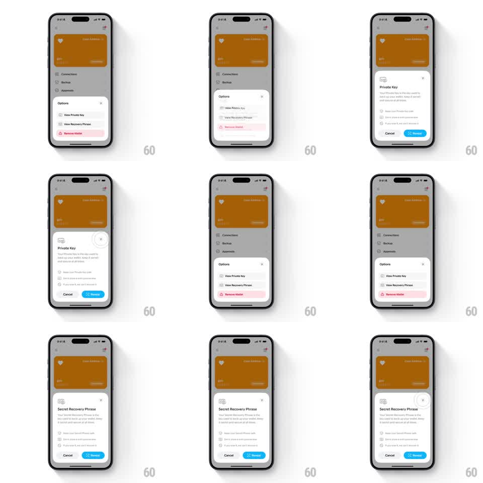

Media
Frame-by-frame

Rebuild this interaction 1:1: Family's backup-options sheet morph - on the orange wallet card screen, the "Options" sheet (View Private Key, View Recovery Phrase, Remove Wallet) morphs into the "Private Key" or "Secret Recovery Phrase" confirmation sheet (warning checklist, Cancel / blue Reveal), the container resizing fluidly between menu and confirmation content.

Rebuild this interaction 1:1: Family's backup-options sheet morph - on the orange wallet card screen, the "Options" sheet (View Private Key, View Recovery Phrase, Remove Wallet) morphs into the "Private Key" or "Secret Recovery Phrase" confirmation sheet (warning checklist, Cancel / blue Reveal), the container resizing fluidly between menu and confirmation content.
## Integration
Integration: stack-agnostic spec - springs given as stiffness/damping, timed motions as duration + curve; map every value to your framework and animation library of choice.
## Scene
Light wallet screen with an orange wallet card (heart logo, "Color Address 12", "BF1", "Treasure...") and rows for Connections, Backup, Approvals. Options sheet: "View Private Key", "View Recovery Phrase", "Remove Wallet" (red), X close. Confirmation sheets: key glyph, "Private Key" (or "Secret Recovery Phrase") title, explainer ("Your Private Key is the key used to back up your wallet. Keep it secret and secure at all times."), warning checklist (Never lose your Private Key safe / Don't share it with anyone else / If you lose it, we can't recover it), Cancel / blue Reveal pair.
## Motion spec
Pattern: sheet container morph between menu and confirmation.
- Tap Backup: the Options sheet slides up (spring ~300/20) over the dimmed card screen (scrim 40%).
- Tap View Private Key: the menu rows slide up and out (150ms, 30ms stagger) as the sheet's height grows to the confirmation layout (spring ~280/22, 300ms); the key glyph pops in (scale 0.8 -> 1, spring ~340/16), the title crossfades (150ms), and the checklist rows stagger in (60ms apart, translateY 8pt -> 0).
- The Cancel / Reveal pair slides up last (200ms), Reveal in blue.
- Cancel returns to the Options menu (reverse morph, 300ms); tapping View Recovery Phrase morphs to the same layout with the phrase title and matching checklist.
- X or scrim tap: the sheet slides down (250ms), scrim lifting.
## Calibration
- The morph never fully dismisses the sheet between states - one continuous surface.
- Remove Wallet's red is the only saturated color in the menu; Reveal's blue is the only one in the confirmation.
## Reduced motion
Menu and confirmation crossfade (200ms) at eased heights.
## Don't miss
- The orange card stays visible above the scrim - context for what's being backed up.
- Private Key and Secret Recovery Phrase sheets share layout and motion, differing only in title and copy.